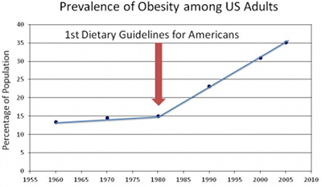
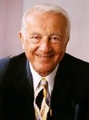

-
The Old Consensus
“Fat is bad, especially saturated fat, of which you should eat very little, otherwise you get high cholesterol which leads to clogged arteries and heart disease. High cholesterol should be lowered with statin pills. Transfats are horrible. If you eat fat, use vegetable oil, margarine and skim dairy products.”
“People get overweight because they don’t move enough and do eat too much, and people who don’t lose weight should eat less and exercise more. If they fail to lose weight, they should try harder!”
 Source: Adele Hite “Also, eat more fruit and vegetables. Carbohydrates are good, especially whole grains. Base your diet on them. Stay away from salt. We are suspicious of meat, especially red & processed meat. Eat fish every once in a while. Otherwise, calories are calories.”
-
It is not working!
Over the past decades, the old consensus has been codified by governments and regulators in “food pyramids”, “healthy plates”, “eat well plates” etc. This wisdom has presided over a fourfold increase in diabetes, and an obesity epidemic. The common response to this is that the wisdom is fine, but that people just don’t listen and persist in not following the message.
It turns out that people did listen. Over the past decades, our intake of fat has actually decreased and the amount of time spent in sports schools has skyrocketed. So if people have listened, it must be the message that is wrong!
While the jury is out, a new consensus is appearing on the leading edge of science and in the ‘blogosphere’. The virtue of this consensus is that it leads to rapid weight loss in many overweight people. In addition, lots of folks with medical issues see their symptoms resolved or lessened if they follow the new consensus. I’ve observed this many many times among close friends and family now.
The Newly Developing Consensus
By themselves, saturated fat and monounsaturated fat, whether from animal or vegetable origin, are actually fine. Industrial transfats are horrible. Polyunsaturated vegetable oils are dangerously unstable, and should be avoided. Actual butter is to be vastly preferred over margarine, which is a dangerous product. We like most fish too. Eat Real Food, not industrially processed or “lite” or skim variants.
Carbohydrates are not holy, and specifically wheat and gluten are questionable. Excess carbs lead to spikes in blood sugar and inflammation. It is this inflammation that leads to heart disease, not “fat clogging arteries”.
Carbohydrates are especially fattening. Fructose, a component of sugar and HFCS is highly suspect and implicated in causing diabetes and heart disease. Cancer cells need loads of sugar and insulin. So, stay away from sugar and reduce carbs drastically. We have a soft spot for very dark chocolate though.
Cholesterol is the stuff of life, don’t fight it with pills. Statins “work”, with a lot of dangerous side effects, because they lower inflammation caused by excess carbs, not because they lower cholesterol.
While exercise has many benefits, you can’t exercise yourself out of a bad diet.
The Newly Developing Consensus
Within the new consensus, here are some interesting groups:
-
The Ketogenic Folks
These simply drop all carbohydrates, which leads to rapid weight loss for a lot of people. Dropping all carbs generally leads to the body shifting its metabolism to burning fat, which helps a lot. Little specific attention to quality of food. Observe this community on reddit. -
Paleo
The guiding philosophy here is that anything we haven’t been eating for a million years is unlikely to work well for us. There is ample evidence that many paleolithic societies were low carb, and as they did not have organized agriculture, ate little dairy. Good intro here. -
Primal
Primal goes beyond paleo, and encompasses how one should exercise, relax, sleep, play and deal with stress. Advocates living the good life. Is in some senses more relaxed than paleo. Full disclosure: I’m very much on board with these folks. -
“Eat real food”
This includes the paleo and primal spheres. Like to speak about Food with a capital F. “Eat Food not ingredients”. Stress the importance of eating unadulterated real food, and not chemical products. Well described in "In Defense of Food"
The forebears
William Banting / William Harvey ✚
William Banting was a 19th century English undertaker who was “severely overweight”. A doctor he consulted, William Harvey, had learned in Paris from a lawyer called Brillat-Savarin that to lose weight, one should drop the carbs. This was the first time that Banting managed to lose weight, and he publicized his success in a famous letter, which was translated and shared widely. To this day, in Swedish “Bantar” means “dieting”.
Ancel Keys (1904 – 2004)
Originated the theory that dietary fat causes heart disease. Swayed entire nations with his theories. The popular rhetoric is that he handpicked a few countries to make his case that consumption of fat was strongly correlated with heart disease, and that his theories took the world by storm. Denise Minger demolished that story, though. However, what is true is that he is “the founding father” of the fat-is-evil theory. We all love to hate him.
The forebears
John Yudkin ✚ (1910 – 1995)

English scientist and author of “Pure, White and Deadly”, a 1970s book exposing sugar as being behind a host of ailments. Widely ridiculed at the time. Turns out he was right.
Robert Atkins ✚ (1930 – 2003)

Of the famous Atkins diet. Originally a cardiologist, in the 1960s he struggled to control his own weight. He chanced upon prior low carb research, and decided to try it for himself to great success. In 1972 his book “Dr. Atkins' Diet Revolution” came out and became an instant bestseller.
We care deeply
As the new consensus is developing, many of us are already benefiting from the new knowlege. Almost everybody in the field has personally become a healthier person. Almost without exception, we've been able to help friends, family, patients of even complete strangers to lose weight or solve health issues.
Please head on therefore to our listing of researchers, bloggers and key opinion leaders!
Together, they've written thousands of articles, and shared hundreds upon hundreds of stories of people who've improved their lives immeasurably.
It is my sincere hope that browsing through this list may help you to improve your health too. And even if it doesn't, many of the linked pages contain some pretty good recipes which are good anyhow ;-)